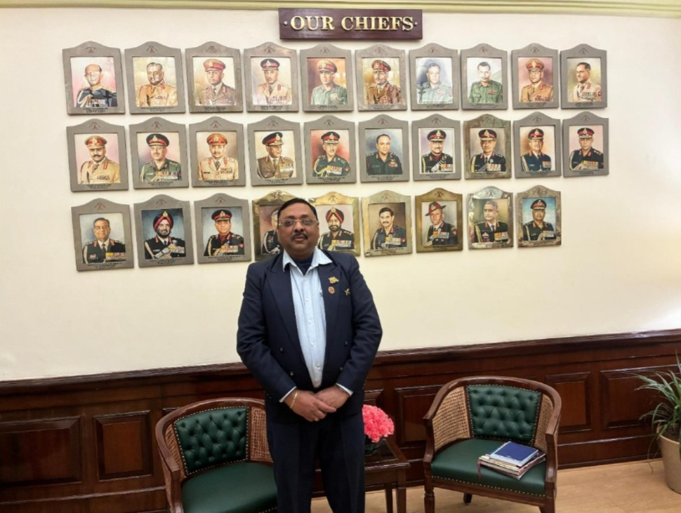
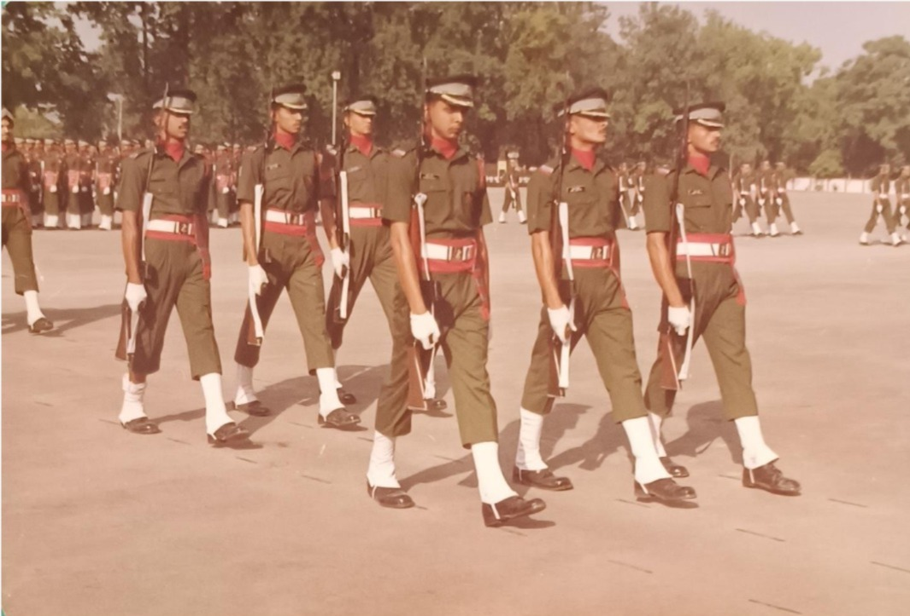
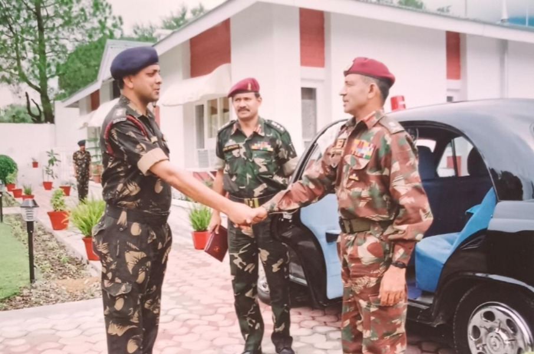
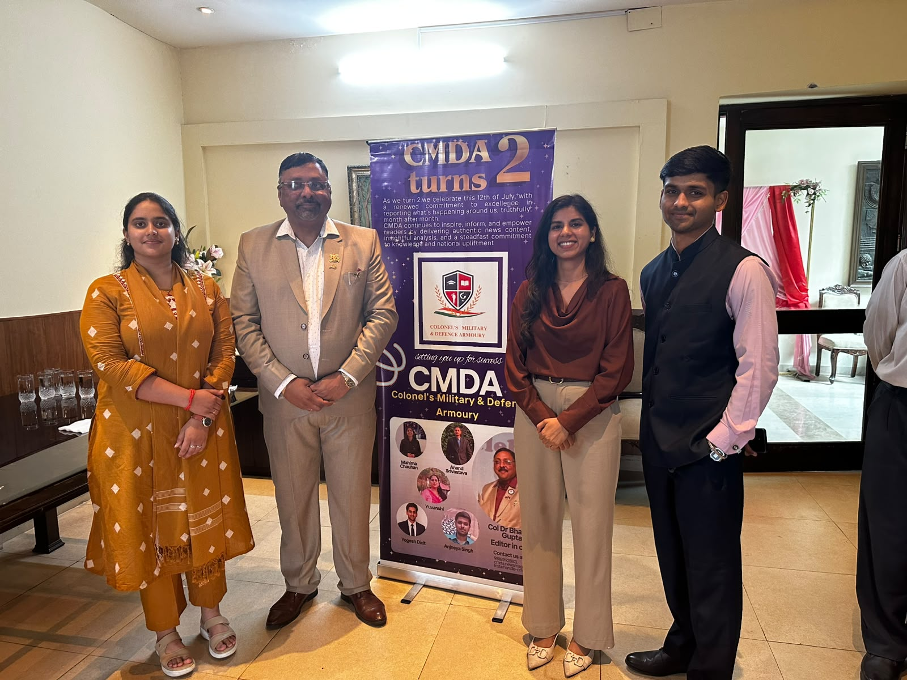
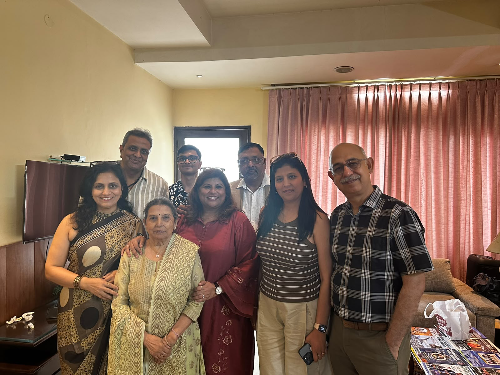
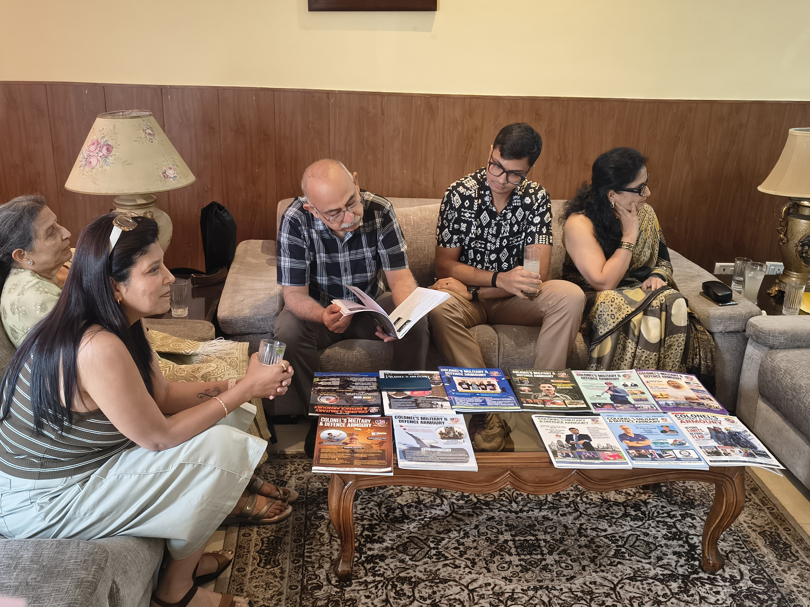
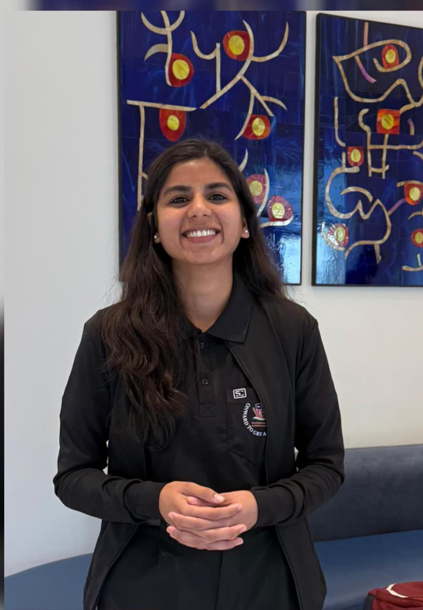
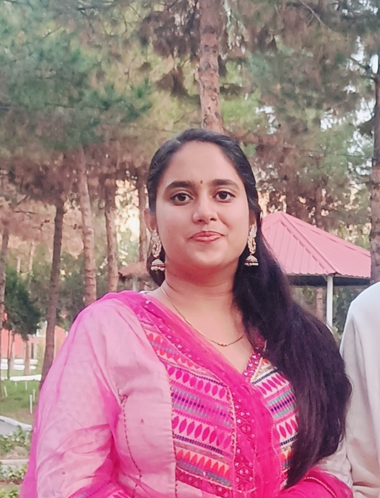
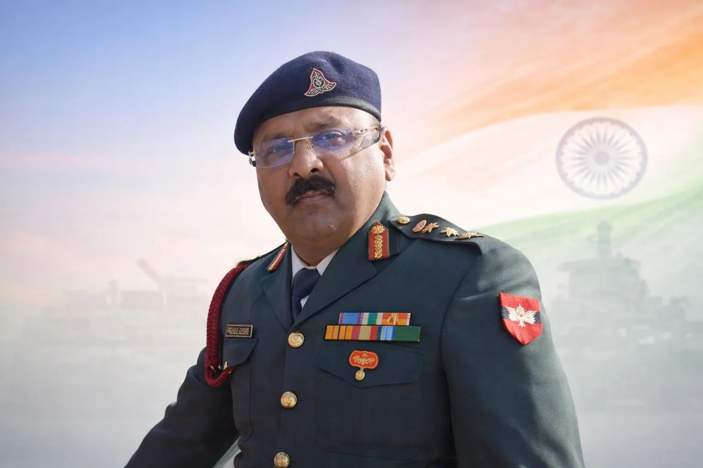

More than three decades of military leadership, journalism, mentoring and instructional experience that brings structure, clarity and credibility to every training programme.
Personal mentorship for serious defence aspirants
Personal Mentorship & Current Affairs Monthly Magazine
Learn under a journalist-cum-military veteran with over 35 years of distinguished experience. Receive practical mentorship in journalism, communication skills, personality development, current affairs awareness, leadership, and structured interview preparation for defence and civil service aspirants.
SSB preparation
Interview guidance
Communication training
Personality development

Guidance shaped by service, teaching, and defence studies.
About
Experience that brings structure, clarity, and credibility.
What students value
Clear feedback, practical corrections, and mentoring that feels personal rather than mass-produced.
Academic and strategic depth
Background in defence studies, international relations, writing, and instructional roles across military and academic settings.
Human Coaching Style
Training is centred on confidence, presence of mind, communication, observation, decision-making and consistency under pressure rather than memorised answers.
Presence of Mind
Selected Moments
Moments

Profile
Formal presence and institutional credibility
Best placed as the lead moment because the hall setting gives the strongest professional and ceremonial backdrop.

Service
Discipline, drill, and military bearing
A natural fit for the SSB and training story because it shows order, precision, and the culture of service.
.jpeg)
Mentoring
Interaction, guidance, and community presence
This works best as a human, conversational image that supports the coaching and mentoring message.

Connection
Partnership, respect, and leadership exchange
A strong closing image because the handshake signals trust, welcome, and professional connection.
Inauguration & Distribution
Website inauguration and 2nd anniversary celebration.
A small photo story from the CMDA website launch and the magazine distribution gathering.

Inauguration
Launch day with students and guests
Formal launch moment captured beside the CMDA banner.

Gathering
Warm interaction with friends and well-wishers
A candid group frame from the inauguration visit.

Distribution
Magazine copies shared and discussed
The reading table shows the CMDA issues laid out together.
Video
Short clip from the inauguration
Use this card to capture the live feel of the event.
Monthly Magazine
Current Affairs
A monthly magazine covering defence, geopolitics, national security and current affairs for serious aspirants.
April 2026 CMDA Issue
Fresh coverage of defence, geopolitics and national awareness for focused preparation.
March 2026 CMDA Issue
A structured monthly read for interview boards, discussions and current affairs fluency.
February 2026 CMDA Issue
Concise and relevant briefing notes for defence, geopolitics and strategic awareness.
January 2026 CMDA Issue
Monthly reading support to sharpen articulation, reflection and current affairs depth.
Resources / Magazine
Official CMDA Monthly Magazine Issues in chronological order.
A focused reading set with only the current CMDA issues, arranged from January to April 2026 for a clean and professional presentation.
E-Library
CMDA Monthly Issues
Open any issue directly for current affairs and defence reading.
CMDA January 2026 Issue
Chronological opening issue for the 2026 CMDA reading set.
CMDA February 2026 Issue
Focused monthly reading for current affairs and defence awareness.
CMDA March 2026 Issue
Structured material for discussion, articulation, and awareness.
CMDA April 2026 Issue
Latest issue in the set, presented in a clean chronological layout.
Team
Meet Team CMDA
Behind every meaningful story is a team driven by curiosity, expertise, and a shared commitment to excellence. Team CMDA is a dynamic group of professionals from diverse backgrounds who bring unique perspectives to our publication.
Research and analytics
Anand Shrivastav
Anand Shrivastav is a Data Analytics professional at S&P Global with a strong analytical mindset and a passion for research. At CMDA, he contributes data-backed insights and supports the magazine with fact-based, well-researched content, ensuring accuracy and credibility across a wide range of subjects.

National issues
Mahima Chauhan
Mahima Chauhan is an ex NCC cadet and an educator with a deep interest in national security. At CMDA, she covers national issues while conducting interviews with distinguished personalities. Her writing aims to inspire young readers to understand the spirit of nation-building.

Environment and health
Yuvanshi Hooda
Yuvanshi Hooda is currently pursuing her MBBS in Uzbekistan and has a keen interest in environmental conservation and public health. At CMDA, she writes on environmental issues, sustainability, and climate awareness, presenting scientific topics in a simple, engaging, and reader-friendly manner.
Sports coverage
Yogesh Dixit
Yogesh Dixit, who serves as HR & Operations Executive at Frontier Group, leads CMDA's sports coverage. With a keen interest in sports and a commitment to promoting excellence, he brings readers the latest sporting developments, inspiring athlete stories, and insightful analysis from the world of sports.
Interviews
Practice for the conversation, not just the questions.

Mock interview guidance
Sessions are designed to improve clarity of thought, truthful expression, body language, and situational confidence.
Communication and personality work
Candidates are guided on articulation, listening, composure, and speaking with maturity instead of memorised answers.
Serious preparation is not about sounding perfect. It is about becoming clearer, steadier and more convincing as your true self.
Officer-Like Development
Develop officer-like qualities through structured guidance in decision-making, responsibility, confidence, social adaptability, effective communication, emotional intelligence, leadership and day-to-day behavioural improvement for overall personality development.
SSB Training
Structured coaching for candidates who want real progress.
Training is built around the actual demands of the SSB process: self-awareness, communication, group behaviour, interview presence, and disciplined preparation over time.
Personal mentoring
Individual attention on personality, habits, self-presentation, and response quality.
Group discussion and lecturette support
Learn how to think in structure, speak with balance, and hold a room without sounding rehearsed.
Interview readiness
Focus on background questions, life choices, strengths, setbacks, awareness, and honesty under observation.
Contact
Reach out for mentoring, batch details, or a focused discussion.
Call
+91 98189 92883For mentoring enquiries, sessions, and guidance requests.
Location
4C-403 Gurjinder Vihar, AWHO Township, Greater Noida, Uttar Pradesh 201310
View detailed profile